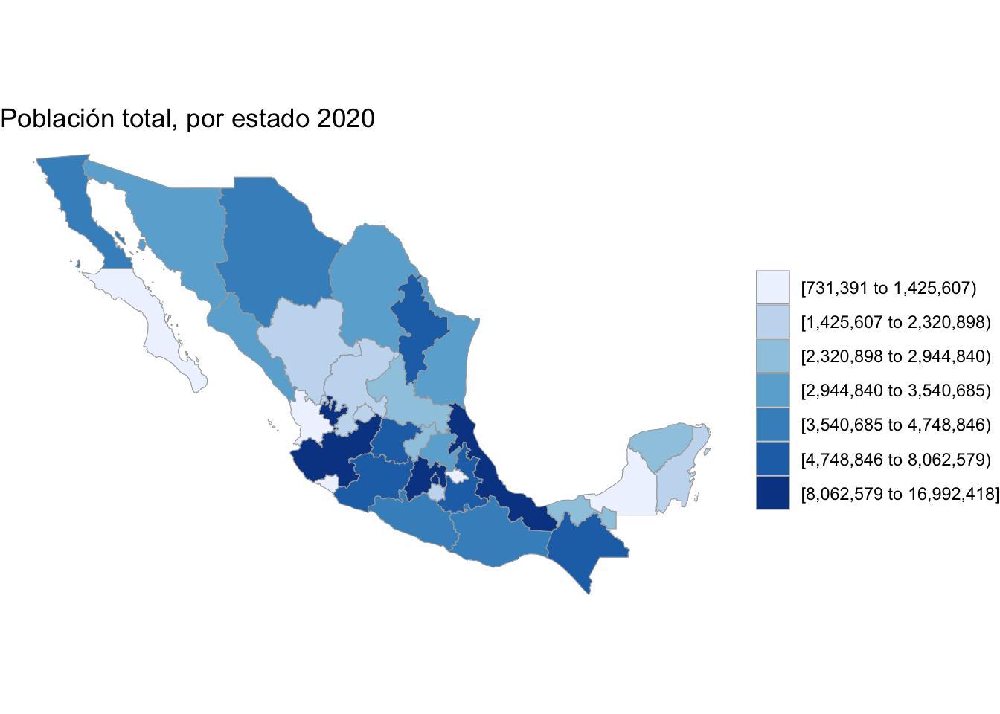
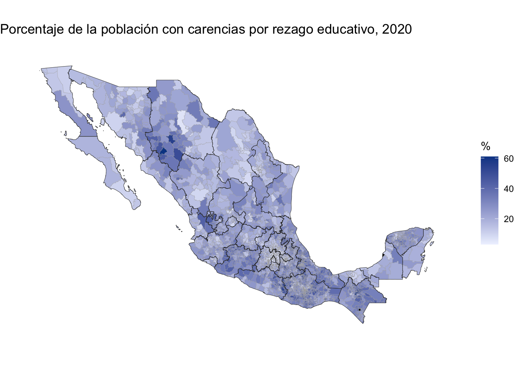
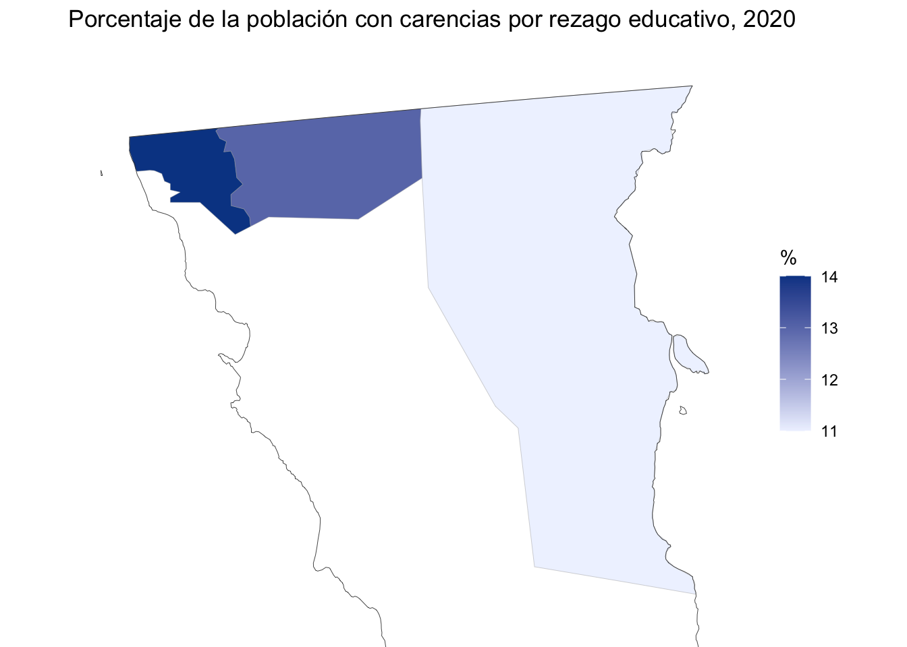
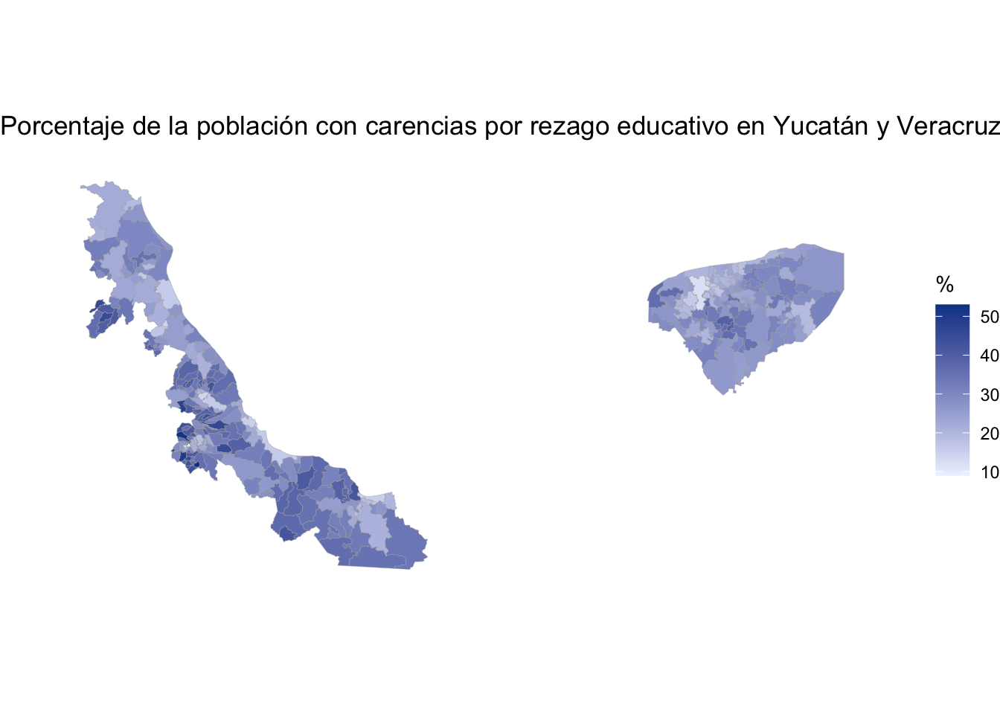

Este se basa en el paquete {cholorplethr} e incluye funciones para crear mapas con base en datos del INEGI. Las bases de datos incluidas en el paquete hacen “match” con los códigos estatales y municipales del INEGI.
La idea central del “choroplethr” es la de colorear regiones, estados, municipios, con con colores de acuerdo con alguna métrica. Por ejemplo, el número de personas o el porcentaje de asegurados.
Entonces, lo primero que vamos a hacer es instalarlo.
if (!require("remotes")) {install.packages("remotes")}
Loading required package: remotes
remotes::install_github("diegovalle/mxmaps")
Skipping install of 'mxmaps' from a github remote, the SHA1 (e72c932d) has not changed since last install.
Use `force = TRUE` to force installation
Posteriormente, cargaremos nuestros paquetes de siempre y agregamos mxmaps.
El primer ejemplo, es con los datos a nivel estatal de población.
data("df_mexstate_2020")
Warning in data("df_mexstate_2020"): data set 'df_mexstate_2020' not found
df_mxstate_2020$value <- df_mxstate_2020$popmxstate_choropleth(df_mxstate_2020,title ="Población total, por estado 2020")

Las dos funciones básicas del paquete son mxstate_choropleth() y mxmunicipio_choropleth()
Los datos que vayamos a utilizar deben tener una columna que se llame region con el código del INEGI para estados o municipios y otra columna que se llame value, con la variable que vamos a graficar.
Las funciones str_mxstate y str_mxmunicipio los provee el paquete para homologar los códigos. Las bases de datos que vienen en el paquete, contienen variables demográficas del censo 2020.
Se puede especificar el título y el número de colores con num_color. Si se requiere una escala continua, ponemos num_color=1.
Veamos la base.
head(df_mxstate_2020)
region state_name state_name_official state_abbr
1 01 Aguascalientes Aguascalientes AGS
2 02 Baja California Baja California BC
3 03 Baja California Sur Baja California Sur BCS
4 04 Campeche Campeche CAMP
5 05 Coahuila Coahuila de Zaragoza COAH
6 06 Colima Colima COL
state_abbr_official year pop pop_male pop_female afromexican
1 Ags. 2020 1425607 696683 728924 22425
2 BC 2020 3769020 1900589 1868431 64362
3 BCS 2020 798447 405879 392568 26330
4 Camp. 2020 928363 456939 471424 19319
5 Coah. 2020 3146771 1563669 1583102 45976
6 Col. 2020 731391 360622 370769 13574
indigenous_language value
1 2539 1425607
2 49130 3769020
3 13581 798447
4 91801 928363
5 5527 3146771
6 5210 731391
También podemos hacer un mapa con el porcentaje de personas hablantes de lenguas indígenas.
df_mxstate_2020$value <- df_mxstate_2020$indigenous_language / df_mxstate_2020$pop *100mxstate_choropleth(df_mxstate_2020, num_colors =1,title ="Porcentaje de la población hablante de lengua indígena, 2020",legend ="%")
carencias_2020_estatal$value<-round(carencias_2020_estatal$rezago_educativo)mxstate_choropleth(carencias_2020_estatal,num_colors =1,title ="Porcentaje de personas con carencias por rezago educativo, 2020",legend ="%")
df_mxmunicipio_2020$value <- df_mxmunicipio_2020$indigenous_language / df_mxmunicipio_2020$pop *100mxmunicipio_choropleth(df_mxmunicipio_2020, num_colors =1,title ="Porcentaje de la población hablante de lengua indígena, 2020",legend ="%")
carencias_2020_municipal$value<-round(carencias_2020_municipal$rezago_educativo)mxmunicipio_choropleth(carencias_2020_municipal, num_colors =1,title ="Porcentaje de la población con carencias por rezago educativo, 2020",legend ="%")
Warning in self$bind(): The following regions were missing and are being set to
NA: 04012, 07125, 29048

Podemos hacer un subset de algunos municipios.
mxmunicipio_choropleth(carencias_2020_municipal, num_colors =1,zoom =subset(carencias_2020_municipal, municipio_name %in%c("Tecate","Tijuana","Mexicali"))$region,title ="Porcentaje de la población con carencias por rezago educativo, 2020",legend ="%")

O bien utilizar el parámetro show_states.
mxmunicipio_choropleth(carencias_2020_municipal, num_colors =1,zoom =subset(carencias_2020_municipal, state_name %in%c("Yucatán", "Veracruz"))$region,title ="Porcentaje de la población con carencias por rezago educativo en Yucatán y Veracruz, 2020",show_states =FALSE,legend ="%")

12.4 Práctica.
Escoge alguna otra de las carencias sociales y elabora tu mapa a nivel estatal y municipal. Compara los resultados con los mapas que hicimos en la sesión.